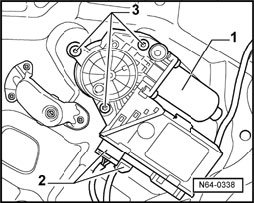
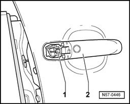
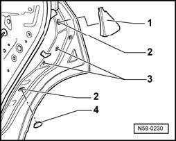
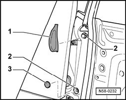
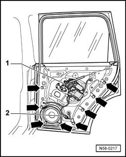
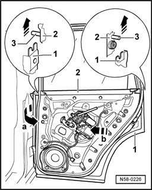
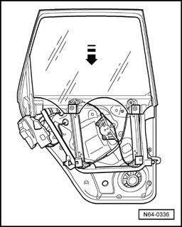
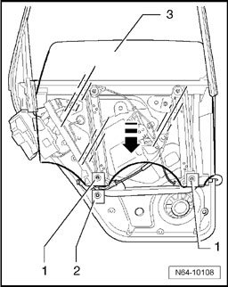
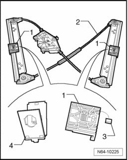
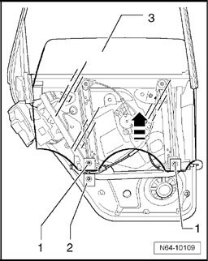

Door Window, Removing and Installing
Door Window, Removing And Installing
Removing

- Remove rear door trim
- Disconnect harness connectors -2- from window regulator motor -1-.
- Unscrew bolts -3- and remove window regulator motor.

- Remove lock cylinder housing
- Unclip clip -1- from door handle -2-.

- Pry out cover caps -1- and -4-.
- Remove the bolts -2- for window frame.
Tightening torque: 20 Nm
- Remove the bolts -3- for door lock.
Tightening torque: 8 Nm

- Pry out cover caps -1- and -3-.
- Disconnect boot from B-pillar and disconnect harness connectors.
- Guide boot and harness connectors through opening into outer door panel.
- Remove the bolts -2- for window frame.
Tightening torque: 20 Nm

- Disconnect harness connector -2- and guide it through opening in assembly carrier.
- Remove bolts -arrows-.
Tightening torque: 8 Nm

- Pull front part of subframe slightly away from outer door panel - arrow a -.
- Be careful to guide the wiring as well.
- Pull subframe out of outer door panel toward hinge side - arrow b -.
- When doing this, make sure that door lock does not catch in outer door panel.

- Lower window by hand in - direction of arrow - to lower stop.

- Remove both bolts -1- from securing elements -2- of door window -3-.
- Fold open both securing elements -2-.
- Lift door window -3- out of securing elements -2- and pull the door window - 3 downward in - direction of arrow - out of window guide.
Installing
NOTE: Rubber buffer -3- is supplied with new window regulator in a plastic bag.

- Before inserting mounting elements -4- of door window, be absolutely sure that rubber buffers -3- are inserted into mounts -1- of window regulator -2-.

- Guide door window -3- into window guide -3- and place door window into securing elements -2-.
- Install bolts -1- and push door window -3- to upper stop by hand in - direction of arrow -.
- Tighten bolts to specified torque of 3.3 Nm.
Then, continue in reverse order of removal.
- Before installing door trim, check function of door window.